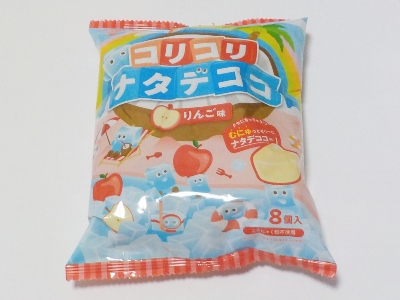
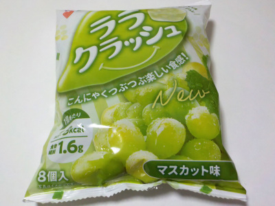

群馬県富岡市富岡2690-1
更新日 : 2026/08/29

蒟蒻畑にナタデココの粒々が入った感じです。ナタデココの甘さと歯ごたえがプラスされました。
ナタデココは好きだけど、蒟蒻畑とどっちがいい？って聞かれると返答に迷います。
期間限定商品で食べるくらいがいいかな。
更新日 : 2023/05/29

特定保険用食品だそうです。こういう肩書って、なんか体には良さそうだけど味が不味そうなんて思ってしまいますが、この商品はそんなことないと思いました。
蓋を開ける時に液体がこぼれやすいので、いつも注意しながら開けています。こういう商品は仕方ないんだろうなー。
マスカットは甘いと思うんですが、この商品は瑞々しくって爽やかな甘さだなと思いました。
蒟蒻でヘルシーな感じがするし、酸味がないし、味が軽いので沢山食べたくなりました。
【おいしいものを食べよう。】【たくさん寝よう。】
【ソロ活をしよう!】【季節感のあることをしよう。】【動画視聴はほどほどに。】【当サイトの全てのコンテンツは無断転載禁止です。】